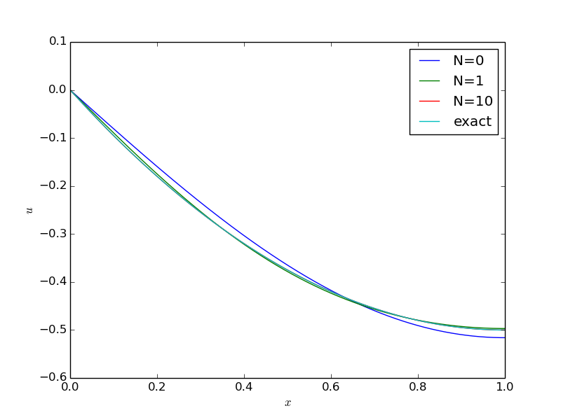
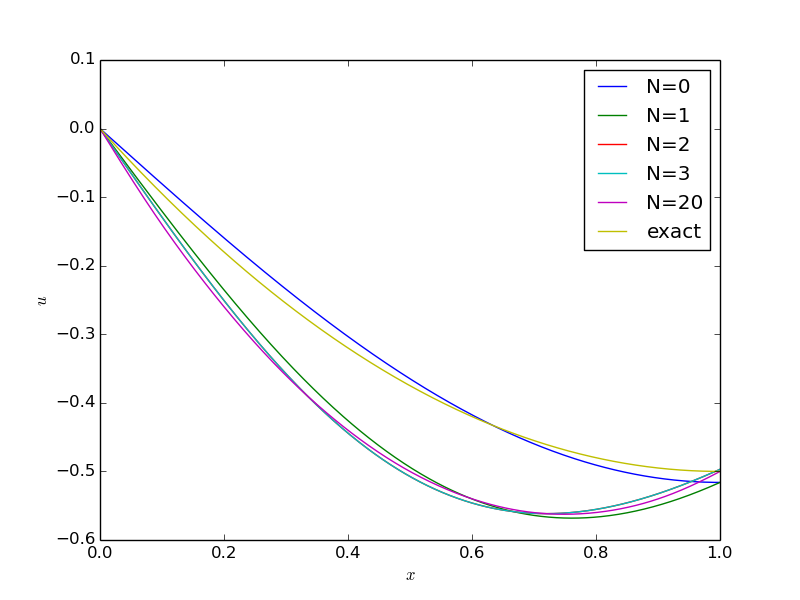
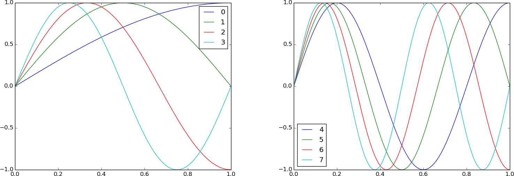
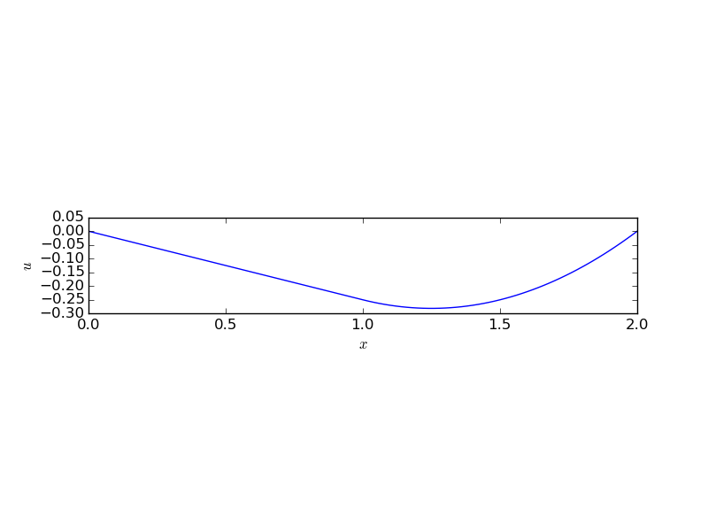
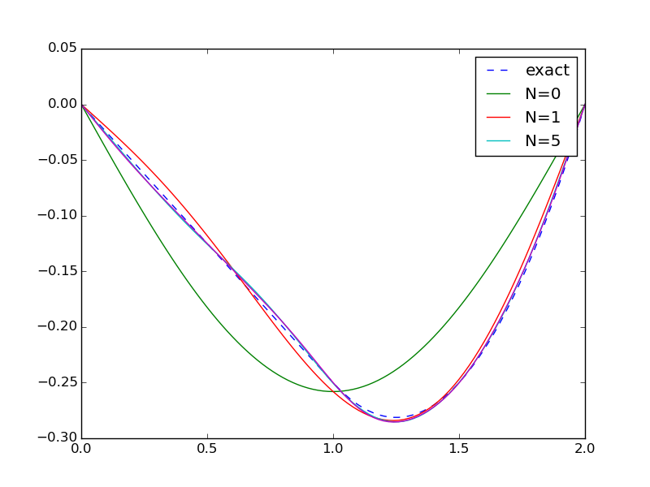

Exercises
Exercise 1: Refactor functions into a more general class
The section Simple model problems and their solutions lists three functions for
computing the analytical solution of some simple model problems. There
is quite some repetitive code, suggesting that the functions can
benefit from being refactored into a class hierarchy, where the super
class solves \( -(a(x)u'(x))'=f(x) \) and where subclasses define the
equations for the boundary conditions in a model. Make a method for
returning the residual in the differential equation and the boundary
conditions when the solution is inserted in these equations. Create a
test function that verifies that all three residuals vanish for each
of the model problems in the section Simple model problems and their solutions. Also
make a method that returns the solution either as sympy expression
or as a string in LaTeX format. Add a fourth subclass for the problem
\( -(au')'=f \) with a Robin boundary condition:
$$ u(0)=0,\quad -u'(L) = C(u - D)\tp$$
Demonstrate the use of this subclass for the case \( f=0 \) and \( a=\sqrt{1+x} \).
This is an exercise in software engineering.
The model-specific information is related to the boundary
conditions only. We can then let the super class take care of the
differential equation and the solution process, while subclasses
provide a method get_bc to
return the symbolic expressions for the boundary equations.
The super class may be coded as shown below.
import sympy as sym
x, L, C, D, c_0, c_1, = sym.symbols('x L C D c_0 c_1')
class TwoPtBoundaryValueProblem(object):
"""
Solve -(a*u')' = f(x) with boundary conditions
specified in subclasses (method get_bc).
a and f must be sympy expressions of x.
"""
def __init__(self, f, a=1, L=L, C=C, D=D):
"""Default values for L, C, D are symbols."""
self.f = f
self.a = a
self.L = L
self.C = C
self.D = D
# Integrate twice
u_x = - sym.integrate(f, (x, 0, x)) + c_0
u = sym.integrate(u_x/a, (x, 0, x)) + c_1
# Set up 2 equations from the 2 boundary conditions and solve
# with respect to the integration constants c_0, c_1
eq = self.get_bc(u)
eq = [sym.simplify(eq_) for eq_ in eq]
print 'BC eq:', eq
self.u = self.apply_bc(eq, u)
def apply_bc(self, eq, u):
# Solve BC eqs respect to the integration constants
r = sym.solve(eq, [c_0, c_1])
# Substitute the integration constants in the solution
u = u.subs(c_0, r[c_0]).subs(c_1, r[c_1])
u = sym.simplify(sym.expand(u))
return u
def get_solution(self, latex=False):
return sym.latex(self.u, mode='plain') if latex else self.u
def get_residuals(self):
"""Return the residuals in the equation and BCs."""
R_eq = sym.diff(sym.diff(self.u, x)*self.a, x) + self.f
R_0, R_L = self.get_bc(self.u)
residuals = [sym.simplify(R) for R in R_eq, R_0, R_L]
return residuals
def get_bc(self, u):
raise NotImplementedError(
'class %s has not implemented get_bc' %
self.__class__.__name__)
The various subclasses deal with the boundary conditions of the various model problems:
class Model1(TwoPtBoundaryValueProblem):
"""u(0)=0, u(L)=D."""
def get_bc(self, u):
return [u.subs(x, 0)-0, # x=0 condition
u.subs(x, self.L) - self.D] # x=L condition
class Model2(TwoPtBoundaryValueProblem):
"""u'(0)=C, u(L)=D."""
def get_bc(self, u):
return [sym.diff(u,x).subs(x, 0) - self.C, # x=0 cond.
u.subs(x, self.L) - self.D] # x=L cond.
class Model3(TwoPtBoundaryValueProblem):
"""u(0)=C, u(L)=D."""
def get_bc(self, u):
return [u.subs(x, 0) - self.C,
u.subs(x, self.L) - self.D]
A suitable test function gets quite compact:
def test_TwoPtBoundaryValueProblem():
f = 2
model = Model1(f)
print 'Model 1, u:', model.get_solution()
for R in model.get_residuals():
assert R == 0
f = x
model = Model2(f)
print 'Model 2, u:', model.get_solution()
for R in model.get_residuals():
assert R == 0
f = 0
a = 1 + x**2
model = Model3(f, a=a)
print 'Model 3, u:', model.get_solution()
for R in model.get_residuals():
assert R == 0
The fourth model is just about defining the boundary conditions as equations:
class Model4(TwoPtBoundaryValueProblem):
"""u(0)=0, -u'(L)=C*(u-D)."""
def get_bc(self, u):
return [u.subs(x, 0) - 0,
-sym.diff(u, x).subs(x, self.L) -
self.C*(u.subs(x, self.L) - self.D)]
A demo function goes like
def demo_Model4():
f = 0
model = Model4(f, a=sym.sqrt(1+x))
print 'Model 4, u:', model.get_solution()
The printout shows that the solution is $$ u(x) = \frac{2CD\sqrt{1+L}(\sqrt{1+x}-1}{2C\sqrt{1+L} + 2C+1}\tp$$
Filename: uxx_f_sympy_class.
Exercise 2: Compute the deflection of a cable with sine functions
A hanging cable of length \( L \) with significant tension \( T \) has a deflection \( w(x) \) governed by $$ T w''(x) = \ell(x), $$ where \( \ell(x) \) the vertical load per unit length. The cable is fixed at \( x=0 \) and \( x=L \) so the boundary conditions become \( w(0)=w(L)=0 \). The deflection \( w \) is positive upwards, and \( \ell \) is positive when it acts downwards.
If we assume a constant load \( \ell(x)=\hbox{const} \), the solution is expected to be symmetric around \( x=L/2 \). For a function \( w(x) \) that is symmetric around some point \( x_0 \), it means that \( w(x_0-h) = w(x_0+h) \), and then \( w'(x_0)=\lim_{h\rightarrow 0}(w(x_0+h)- w(x_0-h))/(2h)=0 \). We can therefore utilize symmetry to halve the domain. We then seek \( w(x) \) in \( [0,L/2] \) with boundary conditions \( w(0)=0 \) and \( w'(L/2)=0 \).
The problem can be scaled by introducing dimensionless independent and dependent variables, $$ \bar x = \frac{x}{L/2},\quad \bar u = \frac{w}{w_c},$$ where \( w_c \) is a characteristic size of \( w \). Inserted in the problem for \( w \), $$ \frac{4Tw_c}{L^{2}}\frac{d^2\bar u}{d\bar x^2} = \ell\ (= \hbox{const})\tp$$ A desire is to have \( u \) and its derivatives about unity, so choosing \( w_c \) such that \( |d^2\bar u/d\bar x^2|=1 \) is an idea. Then \( w_c=\frac{1}{4}\ell L^2/T \), and the problem for the scaled vertical deflection \( u \) becomes $$ u'' = 1,\quad x\in (0,1),\quad u(0)=0,\ u'(1)=0\tp $$ Observe that there are no physical parameters in this scaled problem. From now on we have for convenience renamed \( x \) to be the scaled quantity \( \bar x \).
a) Find the exact solution for the deflection \( u \).
Exercise 1: Refactor functions into a more general class or
the section Simple model problems and their solutions features tools for finding
the analytical solution of this differential equation.
The present
model problem is close to model 2
in the section Simple model problems and their solutions. We can modify the model2
function:
def model():
"""Solve u'' = -1, u(0)=0, u'(1)=0."""
import sympy as sym
x, c_0, c_1, = sym.symbols('x c_0 c_1')
u_x = sym.integrate(1, (x, 0, x)) + c_0
u = sym.integrate(u_x, (x, 0, x)) + c_1
r = sym.solve([u.subs(x,0) - 0,
sym.diff(u,x).subs(x, 1) - 0],
[c_0, c_1])
u = u.subs(c_0, r[c_0]).subs(c_1, r[c_1])
u = sym.simplify(sym.expand(u))
return u
The solution becomes $$ u(x) = \frac{1}{2}x(x-2)\tp$$ Plotting \( u(x) \) shows that \( |u|\in [0,\half] \) which is compatible with the aim of the scaling, i.e., to have \( u \) of size about unity (at least not very small or very large).
b) A possible function space is spanned by \( \baspsi_i=\sin ((2i+1)\pi x/2) \), \( i=0,\ldots,N \). These functions fulfill the necessary condition \( \baspsi_i(0)=0 \), but they also fulfill \( \baspsi_i'(1)=0 \) such that both boundary conditions are fulfilled by the expansion \( u=\sum_jc_j\basphi_j \).
Use a Galerkin and a least squares method to find the coefficients \( c_j \) in \( u(x)=\sum_j c_j\baspsi_j \). Find how fast the coefficients decrease in magnitude by looking at \( c_j/c_{j-1} \). Find the error in the maximum deflection at \( x=1 \) when only one basis function is used (\( N=0 \)).
In this case, where the basis functions and their derivatives are
orthogonal, it is easiest to set up the calculations by hand and
use sympy to help out with the integrals.
With \( u=\sum_{j=0}^Nc_j\baspsi_j(x) \) the residual becomes $$ R = 1 - u'' = 1 +\sum_{j=0}^Nc_j\baspsi_j''(x) = 1 + \sum_{j=0}^Nc_j(2j+1)^2\frac{\pi^2}{4}\sin((2j+1)\frac{\pi x}{2})\tp$$
Least squares method
The minimization of \( \int_0^1R^2dx \) leads to the equations
$$ (R,\frac{\partial R}{\partial c_i})=0,\quad i=0,\ldots,N\tp$$
We find that
$$ \frac{\partial R}{\partial c_i} =
(2i+1)^2\frac{\pi^2}{4}\sin((2i+1)\frac{\pi x}{2}),$$
so the governing equations become
$$ (1+\sum_{j=0}^Nc_j(2j+1)^2\frac{\pi^2}{4}\sin((2j+1)\frac{\pi x}{2}),
(2i+1)^2\frac{\pi^2}{4}\sin((2i+1)\frac{\pi x}{2}) = 0\tp$$
By linearity of the inner product (or integral) this expression can
be reordered to
$$
\begin{align*}
\sum_{j=0}^Nc_j((2j+1)^2\frac{\pi^2}{4}\sin((2j+1)\frac{\pi x}{2}), &
(2i+1)^2\frac{\pi^2}{4}\sin((2i+1)\frac{\pi x}{2}) = \\
& -(1, (2i+1)^2\frac{\pi^2}{4}\sin((2i+1)\frac{\pi x}{2})),
\end{align*}
$$
which is nothing but a linear system
$$ \sum_{j=0}^N A_{i,j}c_j = b_i,\quad i=0,\ldots,N,$$
with
$$
\begin{align*}
A_{i,j} &= (2j+1)^4\frac{\pi^4}{16}\int_0^1
\sin((2j+1)\frac{\pi x}{2})\sin((2i+1)\frac{\pi x}{2})dx,\\
b_i &= -(2i+1)^2\frac{\pi^2}{4}\int_0^1 \sin((2i+1)\frac{\pi x}{2})dx
\end{align*}
$$
Orthogonality of the sine functions \( \sin (k\pi x/2) \) on \( [0,1] \)
for integer \( k \) implies that
\( A_{i,j}=0 \) for \( i\neq j \), and \( A_{i,i} \) can be
computed by sympy:
>>> from sympy import *
>>> i = symbols('i', integer=True)
>>> x = symbols('x', real=True)
>>> integrate(sin(i*pi*x/2)**2, (x, 0, 1))
1/2
Therefore,
$$ A_{i,j} = \left\lbrace\begin{array}{ll}
0,& i\neq j\\
\half (2i+1)^4\frac{\pi^4}{16}, & i = j
\end{array}\right.
$$
The right-hand side can also be computed by sympy:
>>> integrate(sin((2*i+1)*pi*x/2), (x, 0, 1))
2/(pi*(2*i+1))
One should always be skeptical to symbolic software and integration of periodic functions like the sine and cosine since the answers can be too simplistic (see subexercise d!). A general test is to perform numerical integration with lots of sampling points to (partially) verify the symbolic formula. Here is an application of the midpoint rule:
def midpoint_rule(f, M=100000):
"""Integrate f(x) over [0,1] using M intervals."""
from numpy import sum, linspace
dx = 1.0/M # interval length
x = linspace(dx/2, 1-dx/2, M) # integration points
return dx*sum(f(x))
def check_integral_b():
from numpy import pi, sin
for i in range(12):
exact = 2/(pi*(2*i+1))
numerical = midpoint_rule(
f=lambda x: sin((2*i+1)*pi*x/2))
print i, abs(exact - numerical)
The output shows that the difference between numerical and exact
integration is about \( 10^{-11} \), which is "small" (and gets smaller
by just increasing M). This result brings evidence that the
sympy answer is correct.
Alternatively, in this simple case, we can easily calculate the anti-derivative.
It goes like
$$ -\frac{2}{\pi(2i+1)}\cos((2k+1)\frac{\pi x}{2}),$$
and for \( x=1 \) we get
\( \cos\frac{\pi}{2} \), \( \cos 3\frac{\pi}{2} \), \( \cos 5\frac{\pi}{2} \),
and so on, which all evaluates to zero, and since the cosine is 1 for \( x=0 \),
the formula found by sympy is correct.
We then get $$ b_i = -(2i+1)^2\frac{\pi^2}{4}\frac{2}{\pi(2i+1)} = -\half (2i+1)\pi,$$ and consequently, $$ c_i = \frac{b_i}{A_{i,i}} = -\frac{\half (2i+1)\pi}{\half (2i+1)^4}\frac{\pi^4}{16} = -\frac{16}{\pi^3(2i+1)^3}\tp$$
Galerkin's method
The Galerkin method applied to this problem starts with $$ (u'',v) = (1,v)\quad \forall v\in V,$$ and the requirement that \( v(0)=0 \) since \( u(0)=0 \). Integration by parts and using \( u'(1)=0 \) and \( v(0)=0 \) makes the boundary term vanish, and the variational form becomes $$ (u',v') = -(1,v) \quad \forall v\in V\tp$$ Inserting \( u=\sum_{j=0}^Nc_j\baspsi_j(x) \) and \( v=\baspsi_i \) leads to $$ \sum_{j=0}^N (\baspsi_j', \baspsi_i')c_j = (1,\baspsi_i),\quad i=0,\ldots,N\tp $$ With \( \baspsi_i=\sin((2i+1)\frac{\pi x}{2}) \) the matrix entries become $$ A_{i,j} = (2i+1)(2j+1)\frac{\pi^2}{4}\int_0^1 \cos((2i+1)\frac{\pi x}{2}) \cos((2j+1)\frac{\pi x}{2})dx\tp$$ Orthogonality of the cosine functions implies \( A_{i,j}=0 \) for \( i\neq j \), and \( A_{i,i} \) is computed by integrating the square of the cosine function,
>>> integrate(cos((k+1)*pi*x/2)**2, (x, 0, 1))
1/2
Now, $$ A_{i,i} = (2i+1)^2\frac{\pi^2}{4}\half = \frac{1}{8}(2i+1)^2 \pi^2\tp$$ The right-hand side has almost the same integral as in the least squares case, $$ b_i = -\int_0^1 \sin((2i+1)\frac{\pi x}{2})dx = -\frac{2}{\pi (2i+1)}\tp$$ Consequently, $$ c_i = \frac{b_i}{A_{i,i}} = -\frac{16}{\pi^3(2i+1)^3},$$ which is the same result as we obtained in the least squares method.
Decay of coefficients
The coefficients decay, $$ \frac{c_i}{c_{i+1}} = \left(\frac{2i+3}{2i+1}\right)^3 > 0\tp$$ The decay is most pronounced for the first terms:
>>> for i in range(10):
... print (float(2*i+3)/(2*i+1))**3
...
27.0
4.62962962963
2.744
2.12536443149
1.82578875171
1.65063861758
1.53618570778
1.4557037037
1.39609200081
1.35019682169
Error in one-term solution
Keeping just one term (\( N=0 \)) means that $$ u(x) = -\frac{16}{\pi^3}\sin(\frac{\pi x}{2})\tp$$ The maximum deflection at \( x=1 \) becomes \( -16\pi^{-3}=-0.5160 \), to be compared with the exact value \( -\half \). The error is 3.2 percent.
c) Visualize the solutions in b) for \( N=0,1,20 \).
First we need a function to compute the approximate \( u \) in this case:
def sine_sum(x, N):
s = 0
from numpy import pi, sin, zeros
u = [] # u[k] is the sum i=0,...,k
k = 0
for i in range(N+1):
s += - 16.0/((2*i+1)**3*pi**3)*sin((2*i+1)*pi*x/2)
u.append(s.copy()) # important with copy!
return u
Note the need to append s.copy(): doing just u.append(s) will
make, e.g., u[0] a reference to s, which at the end of the
loop is an array corresponding to the maximum \( i \) value.
We also need a function that can create an appropriate plot:
def plot_sine_sum():
from numpy import linspace
x = linspace(0, 1, 501) # coordinates for plot
u = sine_sum(x, N=10)
u_e = 0.5*x*(x-2)
N_values = 0, 1, 10
for k in N_values:
plt.plot(x, u[k])
plt.hold('on')
plt.plot(x, u_e)
plt.legend(['N=%d' % k for k in N_values] + ['exact'],
loc='upper right')
plt.xlabel('$x$'); plt.ylabel('$u$')
plt.savefig('tmpc.png'); plt.savefig('tmpc.pdf')
The plot shows that the solution for \( N=0 \) has a slight deviation from the exact curve, but even \( N=1 \) catches up visually with the exact solution (!).

d) The functions in b) were selected such that they fulfill the condition \( \baspsi'(1)=0 \). However, in the Galerkin method, where we integrate by parts, the condition \( u'(1)=0 \) is incorporated in the variational form. This leads to the idea of just choosing a simpler basis, namely "all" sine functions \( \baspsi_i = \sin((i+1)\frac{\pi x}{2}) \). Will the method adjust the coefficient such that the additional functions compared with those in b) get vanishing coefficients? Or will the additional basis functions improve the solution? Use Galerkin's method.
According to the calculations in b), the Galerkin method, with
\( \baspsi_i = \sin((i+1)\frac{\pi x}{2}) \), leads to the almost the
same
matrix entries on the diagonal:
$$
\begin{align*}
A_{i,i} &= (i+1)(j+1)\frac{\pi^2}{4}\int_0^1 \cos((i+1)\frac{\pi x}{2})
\cos((j+1)\frac{\pi x}{2})dx\\
&= (i+1)^2\frac{\pi^2}{4}\half = \frac{1}{8}(i+1)^2 \pi^2\tp
\end{align*}
$$
The right-hand side becomes (as before)
$$ b_i = -\int_0^1 \sin((i+1)\frac{\pi x}{2})dx = -\frac{2}{\pi (i+1)}\tp$$
We may use sympy to integrate,
>>> integrate(sin((i+1)*pi*x/2), (x, 0, 1))
2/(pi*(i+1))
As noted in b), let us be a bit skeptical to this answer and check it. A quick check with numerical integration,
def check_integral_d_sympy_answer():
from numpy import pi, sin
for i in range(12):
exact = 2/(pi*(i+1))
numerical = midpoint_rule(
f=lambda x: sin((i+1)*pi*x/2))
print i, abs(exact - numerical)
gives the output
0 6.54487575247e-12
1 0.31830988621
2 1.96350713466e-11
3 0.159154943092
4 3.27249061183e-11
5 0.106103295473
6 4.58150045679e-11
7 0.0795774715459
8 5.89047144395e-11
9 0.0636619773677
10 7.19949447281e-11
11 0.0530516476973
It is clear that for \( i \) odd, there are significant differences between
the sympy answer and the midpoint rule with high resolution!
We therefore need to do hand calculations to investigate this problem further. The anti-derivative is very easy to realize in this case: $$ \begin{align*} \int_0^1\sin ((i+1)\pi x/2)dx &= -\frac{2}{\pi(i+1)}(\cos((i+1)\frac{\pi}{2}) - \cos(0))\\ &= \frac{2}{\pi(i+1)}(1 - \cos((i+1)\frac{\pi}{2}))\tp \end{align*} $$ The value of the cosine expression depends on \( i \), and the first values are
| \( i=0 \) | \( i=1 \) | \( i=2 \) | \( i=3 \) |
| 0 | -1 | 0 | 1 |
This pattern repeats and is the same for four consecutive values of \( i \).
Hence, the integral is \( 2/(\pi (i+1)) \) for even \( i \) (\( i=2k \) for
integer \( k \), or equivalently: when \( i\mbox{ mod } 2 = 0 \)). For \( i=4k+1 \), or
equivalently: when \( (i-1)\mbox{ mod } 4 = 0 \), the
integral is \( 4/(\pi(4k+1)) \), while for \( i=4k+3 \), the integral vanishes.
This is a more complicated answer than what sympy provides!
We can check our new answers against numerical integration:
def check_integral_d():
from numpy import pi, sin
for i in range(24):
if i % 2 == 0:
exact = 2/(pi*(i+1))
elif (i-1) % 4 == 0:
exact = 2*2/(pi*(i+1))
else:
exact = 0
numerical = midpoint_rule(
f=lambda x: sin((i+1)*pi*x/2))
print i, abs(exact - numerical)
The output now is around \( 10^{-10} \) and we take that as a sign that our exact results are reliable.
sympy can fail.
Wolfram Alpha does a better job: writing
integrate sin(k*x*pi/2) from 0 to 1 (use k instead of i since the latter
is the imaginary unit) returns the result \( 4\sin^2(\pi k/4)/(\pi k) \),
which coincides with out result.
There are three general techniques to verify a symbolic computation:
- Use alternative software like Wolfram Alpha for comparison
- Check that the result satisfies the problem to be solved
- Make a high-resolution numerical approximation and compare
sympy, and discuss values for
\( x=1 \).)
The final result for \( c_i \) is now $$ c_i = \frac{b_i}{A_{i,i}} = \left\lbrace\begin{array}{ll} -\frac{16}{\pi^3(i+1)^3}, & i\hbox{ even, or } i \hbox{ mod } 2 = 0\\ -\frac{32}{\pi^3(i+1)^3}, & (i-1)\hbox{ mod } 4 = 0,\\ 0, & (i+1)\hbox{ mod } 4 = 0 \end{array}\right. $$ We recognize that for \( i \) even, say \( i=2k \) for integer \( k \), we have exactly the same result as in b): $$ -\sum_k \frac{16}{\pi^3(2k+1)^3}\sin((2k+1)x\frac{\pi x}{2}),$$ but we get an additional set of terms for \( i=4k+1 \), $$ \begin{equation} -\sum_k \frac{32}{\pi^3(i+1)^3}\sin((4k+1)x\frac{\pi x}{2})\tp \tag{96} \end{equation} $$
We can modify the software from c) to compute the approximate \( u \) with the present set of basis functions and coefficients:
def sine_sum_d(x, N):
s = 0
from numpy import pi, sin, zeros
u = [] # u[k] is the sum i=0,...,k
k = 0
for i in range(N+1):
if i % 2 == 0: # even i
s += - 16.0/((i+1)**3*pi**3)*sin((i+1)*pi*x/2)
elif (i-1) % 4 == 0: # 1, 5, 9, 13, 17
s += - 2*16.0/((i+1)**3*pi**3)*sin((i+1)*pi*x/2)
else:
s += 0
u.append(s.copy())
return u
def plot_sine_sum_d():
from numpy import linspace
x = linspace(0, 1, 501) # coordinates for plot
u = sine_sum_d(x, N=20)
u_e = 0.5*x*(x-2)
N_values = 0, 1, 2, 3, 20
for k in N_values:
plt.plot(x, u[k])
plt.hold('on')
plt.plot(x, u_e)
plt.legend(['N=%d' % k for k in N_values] + ['exact'],
loc='upper right')
plt.xlabel('$x$'); plt.ylabel('$u$')
#plt.axis([0.9, 1, -0.52, -0.49])
plt.savefig('tmpd.png'); plt.savefig('tmpd.pdf')
The approximations for \( N=0,1,3,20 \) appear below.

While the approximation for \( N=0 \) coincides with the one in b), we see that \( N=1 \) and higher values of \( N \) lead to a clearly wrong curve. This strange feature has to be investigated!
Let us start by plotting the basis functions for \( i=0,1,\ldots,7 \):

We observe from the figure that all the basis functions corresponding to even \( i \) are symmetric around \( x=1 \), which is an important property of the solution. The functions for odd \( i \) are anti-symmetric. However, for \( i=3,7,11,\ldots \) the basis function has an integer number of periods on \( [0,1] \) so the integral becomes zero, \( c_i=0 \), and consequently there is no effect from these functions. The functions corresponding to \( i=1,5,9,13,\ldots \) are anti-symmetric around \( x=1 \) with nonzero coefficients. The derivative of an anti-symmetric function at the point of anti-symmetry is unity in size. Since the derivatives of all the basis functions corresponding to even \( i \) vanish at \( x=1 \), the extra terms (\( i=1,5,9,13,\ldots \)) in (96) have a nonzero derivative, resulting in \( u'(1)\neq 0 \). That is, these terms destroy the solution!
But we computed \( c_i \) by a Galerkin method, which is equivalent to a least squares method, which gives us the "best" approximation possible? That is true, but it is the best approximation in the chosen space \( V \). The problem is that we have populated (or rather polluted) the space \( V \) with some basis functions that have a wrong mathematical property: they are anti-symmetric around \( x=1 \).
e) Now we drop the symmetry condition at \( x=1 \) and extend the domain to \( [0,2] \) such that it covers the entire (scaled) physical cable. The problem now reads $$ u'' = 1,\quad x\in (0,2),\quad u(0)=u(2)=0\tp$$ This time we need basis functions that are zero at \( x=0 \) and \( x=2 \). The set \( \sin((i+1)\frac{\pi x}{2}) \) from d) is a candidate since they vanish \( x=2 \) for any \( i \). Compute the approximation in this case. Why is this approximation without the problem that this set of basis functions introduced in d)?
The formulas are almost the same as in d), only the integration domain is different. Since the sine functions or orthogonal on \( [0,1] \), they are also orthogonal on \( [0,2] \). Because
>>> integrate(cos((i+1)*pi*x/2)**2, (x, 0, 2))
1
we get (in Galerkin's method) $$ \begin{align*} A_{i,i} &= (i+1)(j+1)\frac{\pi^2}{4}\int_0^2 \cos((i+1)\frac{\pi x}{2}) \cos((i+1)\frac{\pi x}{2})dx\\ & = (i+1)^2\frac{\pi^2}{4}\tp \end{align*} $$ and $$ b_i = -\int_0^2 \sin((i+1)\frac{\pi x}{2})dx = \frac{2}{\pi (i+1)}(\cos((i+1)\pi) - 1)\tp$$ We have that \( \cos((i+1)\pi = -1 \) for \( i \) even and \( \cos((i+1)\pi = 1 \) for \( i \) odd. That is, $$ b_i =\left\lbrace\begin{array}{ll} -\frac{4}{\pi (i+1)}, & i\hbox{ even }\\ 0, & i\hbox{ odd } \end{array}\right.$$ The coefficients become $$ c_i =\frac{b_i}{A_{i,i}} =\left\lbrace\begin{array}{ll} -\frac{16}{\pi^3(i+1)^3}, & i\hbox{ even }\\ 0, & i\hbox{ odd } \end{array}\right.$$ Introducing \( i=2k \) and then switching from \( k \) to \( i \) as summation index gives \( c_i = -\frac{16}{\pi^3(2i+1)^3} \) and $$ u(x) = -\sum_{i=0}^N \frac{16}{\pi^3(2i+1)^3}\sin((i+1)\frac{\pi x}{2}),$$ which is the same expansion as in b).
The reason why the basis functions \( \baspsi_i=\sin((i+1)\frac{\pi x}{2}) \) work well in this case is that the problematic functions for \( i=1,5,\ldots \) in d) now live on \( [0,2] \) instead of \( [0,1] \). On \( [0,2] \) these functions have an integer number of periods such that the integral from 0 to 2 becomes zero. These basis functions are therefore excluded from the expansion since their coefficients vanish. The lesson learned is that two equivalent boundary value problems may make different demands to the basis functions.
Filename: cable_sin.
Exercise 3: Compute the deflection of a cable with power functions
a) Repeat Exercise 2: Compute the deflection of a cable with sine functions b), but work with the space $$ V = \hbox{span}\{x, x^2, x^3, x^4, \ldots\}\tp $$ Choose the dimension of \( V \) to be 4 and observe that the exact solution is recovered by the Galerkin method.
Use the solver function from varform1D.py.
The Galerkin formulation of \( u''=1 \), \( u(0)=0 \), \( u'(1)=0 \), reads
$$ (u',v') = -(1,v)\quad\forall v\in V,$$
and the linear system becomes
$$ \sum_{j=}^N (\baspsi_i', \baspsi_j')c_j = -(1,\baspsi_i),\quad i=0,1,\ldots,N\tp$$
The varform1D.solver function needs a function specifying the integrands
on the left- and right-hand sides of the variational formulation.
Moreover, we must compute a dictionary of \( \baspsi_i \) and \( \baspsi_i' \).
The appropriate code becomes
from varform1D import solver
import sympy as sym
x, b = sym.symbols('x b')
f = 1
# Compute basis functions and their derivatives
N = 4
psi = {0: [x**(i+1) for i in range(N+1)]}
psi[1] = [sym.diff(psi_i, x) for psi_i in psi[0]]
# Galerkin
def integrand_lhs(psi, i, j):
return psi[1][i]*psi[1][j]
def integrand_rhs(psi, i):
return -f*psi[0][i]
Omega = [0, 1]
u, c = solver(integrand_lhs, integrand_rhs, psi, Omega,
verbose=True, symbolic=True)
print 'Galerkin solution u:', sym.simplify(sym.expand(u))
Running this code gives the output
solution u: x*(x - 2)/2
which coincides with the exact solution (\( c_3=c_4=0 \)).
b) What happens if we use a least squares method for this problem with the basis in a)?
The least squares formulation leads to $$ (R,\frac{\partial R}{\partial c_i}=0,\quad i=0,\ldots,N,$$ with $$ R = 1 - u'' = 1 - \sum_jc_j\baspsi_j''\tp$$ We have $$ \frac{\partial R}{\partial c_i} = \baspsi_i'',$$ leading to the equations $$ (1 + \sum_jc_j\baspsi_j'', \baspsi_i''),\quad i=0,\ldots,N,$$ which is a linear system $$ \sum_{j=0}^N(\baspsi_j'',\baspsi_i'') = (-1,\baspsi_i''),\quad i=0,\ldots,N\tp$$ The fundamental problem with the basis in a) is that \( \baspsi_0''=0 \), so if power functions of \( x \) are wanted, we need to work with the basis \( V=\hbox{span}\{x^2, x^3,\ldots\} \). If we do so, we can easily modify the code from a),
# Least squares
psi = {0: [x**(i+2) for i in range(N+1)]}
psi[1] = [sym.diff(psi_i, x) for psi_i in psi[0]]
psi[2] = [sym.diff(psi_i, x) for psi_i in psi[1]]
def integrand_lhs(psi, i, j):
return psi[2][i]*psi[2][j]
def integrand_rhs(psi, i):
return -f*psi[2][i]
Omega = [0, 1]
u, c = solver(integrand_lhs, integrand_rhs, psi, Omega,
verbose=True, symbolic=True)
print 'solution u:', sym.simplify(sym.expand(u))
The result is \( u=-\half x^2 \). This function does not obey \( u'(1)=0 \) and is completely wrong. In this least squares method we cannot access the basis function \( x \), which is needed in the exact solution, and we have no means to obtain \( u'(1)=0 \).
Remark. There is a modification of the least squares method that can be applied here. The problem \( u''=1 \) must be rewritten as a system of two equations, \( u_1'=u_2 \), \( u_2' =1 \). We expand \( u_1=\sum_{j=0}^N c_j\baspsi_j \) and \( u_2=\sum_{j=0}^N d_j\baspsi_j \). The residuals in both equations are added, squared, and differentiated with respect to \( c_i \) and \( d_i \), \( i=0,\ldots,N \). The result is a coupled equation system for the \( c_i \) and \( d_i \) coefficients.
Filename: cable_xn.
Exercise 4: Check integration by parts
Consider the Galerkin method for the problem involving \( u \) in Exercise 2: Compute the deflection of a cable with sine functions. Show that the formulas for \( c_j \) are independent of whether we perform integration by parts or not.
The Galerkin method is $$ (u'',v)=(1,v)\quad\forall v\in V,$$ and with the choice of \( V \) we get $$ \begin{align*} A_{i,j} &=-(i+1)^2\pi^2 \int_0^1\sin^2((i+1)\frac{\pi x}{2})dx,\\ b_i &= \int_0^1\sin((i+1)\frac{\pi x}{2})dx \end{align*} $$ From Exercise 2: Compute the deflection of a cable with sine functions we realize that the integrals are the same as in the least squares method, and those results were identical to those of the Galerkin method with integration by parts.
Filename: cable_integr_by_parts.
Exercise 5: Compute the deflection of a cable with 2 P1 elements
Solve the problem for \( u \) in Exercise 2: Compute the deflection of a cable with sine functions using two P1 linear elements. Incorporate the condition \( u(0)=0 \) by two methods: 1) excluding the unknown at \( x=0 \), 2) keeping the unknown at \( x=0 \), but modifying the linear system.
From Exercise 2: Compute the deflection of a cable with sine functions, the Galerkin method, after integration by parts, reads $$ (u',v')=-(1,v)\quad\forall v\in V\tp$$ We have two elements, \( \Omega^{(0)}=[0,\half] \) and \( \Omega^{(1)}=[\half,1] \).
Method 1: Excluding the unknown at \( x=0 \)
Since \( u(0)=0 \), we exclude the value at \( x=0 \) as degree of freedom in the linear system. (There is no need for any boundary function.) The expansion reads \( u=c_0\basphi_1(x) + c_1\basphi_2(x) \). The element matrix has then only one entry in the first element, $$ \tilde A^{(0)} = \frac{1}{h}(1)\tp$$ From element 1 we get the usual element matrix $$ \tilde A^{(1)} = \frac{1}{h} \left(\begin{array}{rr} 1 & -1\\ -1 & 1 \end{array}\right)\tp $$ The element vector in element 0 becomes $$ \tilde b^{(0)} = \frac{h}{2}(-1),$$ while the second element gives a contribution $$ \tilde b^{(1)} = \frac{h}{2} \left(\begin{array}{c} -1 \\ -1 \end{array}\right)\tp $$ Assembling the contributions gives $$ \frac{1}{h} \left(\begin{array}{cc} 2 & -1\\ -1 & 1 \end{array}\right) \left(\begin{array}{c} c_0 \\ c_1 \end{array}\right) = - \frac{h}{2} \left(\begin{array}{c} 2 \\ 1 \end{array}\right)\tp $$ Note that \( h=\half \). Solving this system yields $$ c_0 = -\frac{3}{8},\quad c_1=-\half\quad\Rightarrow\quad u=-\frac{3}{8}\basphi_1(x)-\half\baspsi_2(x)\tp$$ Evaluating the exact solution for \( x=\half \) and \( x=1 \), we get \( 3/8 \) and \( 1/2 \), respectively, a result which shows that the numerical solution with P1 is exact at the three node points. The difference between the numerical and exact solution is that the numerical solution varies linearly over the two elements while the exact solution is quadratic.
Method 2: Modifying the linear system
Now we let \( c_i \) correspond to the value at node \( \xno{i} \), i.e., all known Dirichlet values become part of the linear system. The expansion is now simply \( u=\sum_{i=0}^2c_i\basphi_i(x) \), with three unknowns \( c_0 \), \( c_1 \), and \( c_2 \). Now the element matrix in the first and second element are equal. The same is true for the element vectors. Assembling yields $$ \frac{1}{h} \left(\begin{array}{ccc} 1 & -1 & 0\\ -1 & 2 & -1\\ 0 & -1 & 1 \end{array}\right) \left(\begin{array}{c} c_0 \\ c_1\\ c_2 \end{array}\right) = - \frac{h}{2} \left(\begin{array}{c} 1\\ 2\\ 1 \end{array}\right)\tp $$ The next step is to modify the linear system to implement the Dirichlet condition \( c_0=0 \). We first multiply by \( h=\half \) and replace the first equation by \( c_0=0 \): $$ \left(\begin{array}{ccc} 1 & 0 & 0\\ -1 & 2 & -1\\ 0 & -1 & 1 \end{array}\right) \left(\begin{array}{c} c_0 \\ c_1\\ c_2 \end{array}\right) = - \left(\begin{array}{c} 0\\ \frac{1}{4}\\ \frac{1}{8} \end{array}\right)\tp $$ We see that the remaining \( 2\times 2 \) system is identical to the one previously solved, and the solution is the same. $$ u = 0\basphi_0(x) - \frac{3}{8}\basphi_1(x) - \half\baspsi_2(x)\tp$$
Filename: cable_2P1.
Exercise 6: Compute the deflection of a cable with 1 P2 element
Solve the problem for \( u \) in Exercise 2: Compute the deflection of a cable with sine functions using one P2 element with quadratic basis functions.
The P2 basis functions on a reference element \( [-1,1] \) are
$$
\begin{align*}
\refphi_0(X) &= \half (X-1)X
\\
\refphi_1(X) &= 1 - X^2
\\
\refphi_2(X) &= \half (X+1)X
\end{align*}
$$
The element matrix and vector are easily calculated by some lines with
sympy:
import sympy as sym
X, h = sym.symbols('X h')
half = sym.Rational(1, 2)
psi = [half*(X-1)*X, 1-X**2, half*(X+1)*X]
dpsi_dX = [sym.diff(psi[r], X) for r in range(len(psi))]
# Element matrix
# (2/h)*dpsi_dX[r]*(2/h)*dpsi_dX[s]*h/2
import numpy as np
d = 2
# Use a numpy matrix with general objects to hold A
A = np.empty((d+1, d+1), dtype=object)
for r in range(d+1):
for s in range(d+1):
integrand = dpsi_dX[r]*dpsi_dX[s]*2/h
A[r,s] = sym.integrate(integrand, (X, -1, 1))
print A
# Element vector
# f*psi[r]*h/2, f=1
d = 2
b = np.empty(d+1, dtype=object)
for r in range(d+1):
integrand = -psi[r]*h/2
b[r] = sym.integrate(integrand, (X, -1, 1))
print b
The formatted element matrix and vector output becomes
[[7/(3*h) -8/(3*h) 1/(3*h)]
[-8/(3*h) 16/(3*h) -8/(3*h)]
[1/(3*h) -8/(3*h) 7/(3*h)]]
[-h/6 -2*h/3 -h/6]
or in mathematical notation: $$ \tilde A^{(e)}=\frac{1}{3h} \left(\begin{array}{ccc} 7 & -8 & 1\\ -8 & 16 & -8\\ 1 & -8 & 7 \end{array}\right),\quad \tilde b^{(e)} = - \frac{h}{6} \left(\begin{array}{c} 1\\ 4\\ 1 \end{array}\right)\tp $$
Method 1: Excluding the unknown at \( x=0 \)
The expansion is \( u=c_0\basphi_1(x) + c_1\basphi_2(x) \). The element matrix corresponding to the first element excludes contributions associated with the unknown at the left node, i.e., we exclude row and column 0. In the element vector, we exclude the first entry. $$ \tilde A^{(0)}=\frac{1}{3h} \left(\begin{array}{cc} 16 & -8\\ -8 & 7 \end{array}\right),\quad \tilde b^{(e)} = - \frac{h}{6} \left(\begin{array}{c} 4\\ 1 \end{array}\right)\tp $$ Now, \( h=1 \). The solution of the linear system $$ \frac{1}{3h} \left(\begin{array}{cc} 16 & -8\\ -8 & 7 \end{array}\right) \left(\begin{array}{c} c_1\\ c_2 \end{array}\right) = - \frac{h}{6} \left(\begin{array}{c} 4\\ 1 \end{array}\right) $$ is \( c_1=3/8 \) and \( c_2=1/2 \). As for P1 elements in Exercise 5: Compute the deflection of a cable with 2 P1 elements, the values at the nodes are exact, but this time the variation between the nodes is quadratic, i.e., exact. One P2 element produces the complete, exact solution.
Method 2: Modifying the linear system
This time the expansion reads \( u=\sum_{i=0}^2 c_i\basphi_i(x) \) with three unknowns \( c_0 \), \( c_1 \), and \( c_2 \). The linear system consists of the complete \( 3\times 3 \) element matrix and the corresponding element vector: $$ \frac{1}{3h} \left(\begin{array}{ccc} 7 & -8 & 1\\ -8 & 16 & -8\\ 1 & -8 & 7 \end{array}\right) \left(\begin{array}{c} c_0\\ c_1\\ c_2 \end{array}\right) = - \frac{h}{6} \left(\begin{array}{c} 1\\ 4\\ 1 \end{array}\right)\tp $$ The boundary condition is incorporated by replacing the first equation by \( c_0=0 \), but prior to taking that action, we multiply by \( 3h \) and insert \( h=1 \). $$ \left(\begin{array}{ccc} 1 & 0 & 0 \\ -8 & 16 & -8\\ 1 & -8 & 7 \end{array}\right) \left(\begin{array}{c} c_0\\ c_1\\ c_2 \end{array}\right) = \left(\begin{array}{c} 0\\ - 2\\ - \half \end{array}\right)\tp $$ Realizing that \( c_0=0 \), which means we can remove the first column of the system, shows that the equations are the same as above and hence that the solution is identical.
Filename: cable_1P2.
Exercise 7: Compute the deflection of a cable with a step load
We consider the deflection of a tension cable as described in Exercise 2: Compute the deflection of a cable with sine functions: \( w''=\ell \), \( w(0)=w(L)=0 \). Now the load is discontinuous: $$ \ell (x) =\left\lbrace\begin{array}{ll} \ell_1, & x < L/2,\\ \ell_2, & x \geq L/2 \end{array}\right.\quad x\in [0,L] \tp $$ This load is not symmetric with respect to the midpoint \( x=L/2 \) so the solution loses its symmetry. Scaling the problem by introducing $$ \bar x = \frac{x}{L/2},\quad u = \frac{w}{w_c},\quad\bar\ell = \frac{\ell - \ell_1}{\ell_2 - \ell_1}\tp$$ This leads to a scaled problem on \( [0,2] \) (we rename \( \bar x \) as \( x \) for convenience): $$ u'' = \bar\ell(x) = \left\lbrace\begin{array}{ll} 1, & x < 1,\\ 0, & x \geq 1 \end{array}\right. \quad x\in (0,1),\quad u(0)=0,\ u(2)=0 \tp $$
a) Find the analytical solution of the problem.
Integrate the equation separately for \( x < 1 \) and \( x>1 \). Use the conditions that \( u \) and \( u' \) must be continuous at \( x=1 \).
For \( x < 1 \) we get \( u_1(x) = C_1x + C_2 \), and the boundary condition
\( u_1(0)=0 \) implies \( C_2=0 \). For \( x>1 \) we get \( u_2(x)=\half x^2 + C_3x + C_4 \).
Continuity of \( u'(1) \) leads to
$$ C_1 = 1 + C_3,$$
and continuity of \( u(1) \) means
$$ C_1 = \half + C_3 + C_4,$$
while the condition \( u_2(2)=0 \) gives the third equation we need:
$$ 2 + 2C_3 + C_4 = 0\tp$$
We use sympy to solve them:
>>> from sympy import symbols, Rational, solve
>>> C1, C3, C4 = symbols('C1 C3 C4')
>>> solve([C1 - 1 - C3,
C1 - Rational(1,2) - C3 - C4,
2 + 2*C3 + C4], [C1,C3,C4])
{C1: -1/4, C4: 1/2, C3: -5/4}
Then $$ u(x) = \left\lbrace\begin{array}{ll} -\frac{1}{4}x, & x\leq 1,\\ \half x^2 - \frac{5}{4}x + \half, & x\geq 1 \end{array}\right. $$

b) Use \( \baspsi_i = \sin((i+1)\frac{\pi x}{2}) \), \( i=0,\ldots,N \) and the Galerkin method to find an approximate solution \( u=\sum_j c_j\baspsi_j \). Plot how fast the coefficients \( c_j \) tend to zero (on a log scale).
The Galerkin formulation of the problem becomes
$$ (u',v') = -(\bar\ell, v) = \left\lbrace\begin{array}{ll}
0, & x\leq 1,\\
-(1,v), & x\geq 1
\end{array}\right.\quad\forall v\in V\tp$$
A requirement is that \( v(0)=v(2)=0 \) because of the boundary conditions
on \( u \). The chosen basis functions
fulfill this requirement for any integer \( i \). Inserting
\( u=\sum_{j=0}^N c_j\baspsi_j \) and \( v=\baspsi_i \), \( i=0,\ldots,N \),
gives as usual the linear system \( \sum_j A_{i,j}c_j = b_i \), \( i=0,\ldots,N \),
where
$$
A_{i,j} = (i+1)(j+1)\frac{\pi^2}{4}\int_0^2 \cos((i+1)\frac{\pi x}{2})
\cos((j+1)\frac{\pi x}{2})dx\tp$$
The cosine functions are orthogonal on \( [0,2] \) so \( A_{i,j}=0 \) for
\( i\neq j \), while \( A_{i,i} \) is computed (e.g., by sympy) as in
Exercise 2: Compute the deflection of a cable with sine functions, part e. The result is
$$ A_{i,i} = (i+1)^2\frac{\pi^2}{4}\tp$$
The right-hand side is
$$ b_i =
-\int_1^2 \sin((i+1)\frac{\pi x}{2})dx
= \frac{2}{\pi (i+1)}(\cos((i+1)\pi) - \cos((i+1)\pi/2))\tp$$
(Trying to do the integral in sympy gives a complicated expression that
needs discussion - it
is easier to do all calculations by hand.)
We have that \( \cos((i+1)\pi = -1 \) for \( i \) even and
\( \cos((i+1)\pi = 1 \) for \( i \) odd, while \( \cos((i+1)\pi/2) \) is
discussed in
Exercise 2: Compute the deflection of a cable with sine functions, part d. The values
of \( \cos((i+1)\pi) - \cos((i+1)\pi/2) \) can be summarized in the following
table:
| \( i\hbox{ mod } 4 = 0 \) | \( (i-1)\hbox{ mod } 4 = 0 \) | \( (i-2)\hbox{ mod } 4 = 0 \) | \( (i-3)\hbox{ mod } 4 = 0 \) |
| \( -1 -0 \) | \( 1 - (-1) \) | \( -1 - 0 \) | \( 1-1 \) |
The following function computes the approximate solution:
def sine_solution(x, N):
from numpy import pi, sin
s = 0
u = [] # u[i] is the solution for N=i
for i in range(N+1):
if i % 4 == 0:
cos_min_cos = -1
elif (i-1) % 4 == 0:
cos_min_cos = 2
elif (i-2) % 4 == 0:
cos_min_cos = -1
elif (i-1) % 4 == 0:
cos_min_cos = 0
b_i = 2/(pi*(i+1))*cos_min_cos
A_ii = (i+1)**2*pi**2/4
c_i = b_i/A_ii
s += c_i*sin((i+1)*x*pi/2)
u.append(s.copy())
return u
The exact solution is a function defined in a piecewise way. Below we make an implementation that works both for array and scalar arguments:
def exact_solution(x):
if isinstance(x, np.ndarray):
return np.where(x < 1, -1./4*x, 0.5*x**2 - 5./4*x + 0.5)
else:
return -1./4*x if x < 1 else 0.5*x**2 - 5./4*x + 0.5
Now we can make a plot of the exact solution and approximate solutions for various \( N \):
def plot_sine_solution():
x = np.linspace(0, 2, 101)
u = sine_solution(x, N=20)
plt.figure()
x = np.linspace(0, 2, 101)
plt.plot(x, exact_solution(x), '--')
N_values = 0, 1, 5
for N in 0, 1, 5, 10:
plt.plot(x, u[N])
plt.legend(['exact'] + ['N=%d' % N for N in N_values])
plt.savefig('tmp2.png'); plt.savefig('tmp2.pdf')

c) Solve the problem with P1 finite elements. Plot the solution for \( N_e=2,4,8 \) elements.
The element matrices and vectors are as for the well-known model problem \( u''=1 \), except that the element vectors vanish for all elements in \( [0,1] \). The following function defines a uniform mesh of P1 elements and runs a finite element algorithm where we use ready-made/known formulas for the element matrix and vector:
def P1_solution():
plt.figure()
from fe1D import mesh_uniform, u_glob
N_e_values = [2, 4, 8]
d = 1
legends = []
for N_e in N_e_values:
vertices, cells, dof_map = mesh_uniform(
N_e=N_e, d=d, Omega=[0,2], symbolic=False)
h = vertices[1] - vertices[0]
Ae = 1./h*np.array(
[[1, -1],
[-1, 1]])
N = N_e + 1
A = np.zeros((N, N))
b = np.zeros(N)
for e in range(N_e):
if vertices[e] >= 1:
be = -h/2.*np.array(
[1, 1])
else:
be = h/2.*np.array(
[0, 0])
for r in range(d+1):
for s in range(d+1):
A[dof_map[e][r], dof_map[e][s]] += Ae[r,s]
b[dof_map[e][r]] += be[r]
# Enforce boundary conditions
A[0,:] = 0; A[0,0] = 1; b[0] = 0
A[-1,:] = 0; A[-1,-1] = 1; b[-1] = 0
c = np.linalg.solve(A, b)
# Plot solution
xc, u, nodes = u_glob(c, vertices, cells, dof_map)
plt.plot(xc, u)
legends.append('$N_e=%d$' % N_e)
plt.plot(xc, exact_solution(xc), '--')
legends.append('exact')
plt.legend(legends, loc='lower left')
plt.savefig('tmp3.png'); plt.savefig('tmp3.pdf')

Filename: cable_discont_load.
Exercise 8: Compute with a non-uniform mesh
a) Derive the linear system for the problem \( -u''=2 \) on \( [0,1] \), with \( u(0)=0 \) and \( u(1)=1 \), using P1 elements and a non-uniform mesh. The vertices have coordinates \( \xno{0}=0 < \xno{1} < \cdots < \xno{N_n-1}=1 \), and the length of cell number \( e \) is \( h_e = \xno{e+1} -\xno{e} \).
The element matrix and vector for this problem is given by (61). The change in this exercise is that \( h \) is not a constant element length, but varying with the element number \( e \). We therefore write $$ \tilde A^{(e)} =\frac{1}{h_e}\left(\begin{array}{rr} 1 & -1\\ -1 & 1 \end{array}\right),\quad \tilde b^{(e)} = h_e\left(\begin{array}{c} 1\\ 1 \end{array}\right)\tp $$ Assembling such element matrices yields $$ \left( \begin{array}{ccccccccc} h_0^{-1} & -h_0^{-1} & 0 &\cdots & \cdots & \cdots & \cdots & \cdots & 0 \\ -h_0^{-1} & h_0^{-1}+h_1^{-1} & -h_1^{-1} & \ddots & & & & & \vdots \\ 0 & -h_1^{-1} & h_1^{-1} + h_2^{-1} & -h_2^{-1} & \ddots & & & & \vdots \\ \vdots & \ddots & & \ddots & \ddots & 0 & & & \vdots \\ \vdots & & \ddots & \ddots & \ddots & \ddots & \ddots & & \vdots \\ \vdots & & & 0 & -h_{i-1}^{-1} & h_{i-1}^{-1} + h_i^{-1} & -h_i^{-1} & \ddots & \vdots \\ \vdots & & & & \ddots & \ddots & \ddots &\ddots & 0 \\ \vdots & & & & &\ddots & \ddots &\ddots & -h_{N_e}^{-1} \\ 0 &\cdots & \cdots &\cdots & \cdots & \cdots & 0 & -h_{N_e}^{-1} & h_{N_e}^{-1} \end{array} \right) $$ The element vectors assemble to $$ \left( \begin{array}{c} h_0 \\ h_0 + h_1\\ \vdots\\ \vdots \\ \vdots \\ h_{i-1} + h_i\\ \vdots \\ \vdots\\ h_{N_e} \end{array} \right) $$
b) It is of interest to compare the discrete equations for the finite element method in a non-uniform mesh with the corresponding discrete equations arising from a finite difference method. Go through the derivation of the finite difference formula \( u''(x_i) \approx [D_x D_x u]_i \) and modify it to find a natural discretization of \( u''(x_i) \) on a non-uniform mesh. Compare the finite element and difference discretizations
Using the definition of the centered, 2nd-order finite difference approximation to \( u'' \) we can set up $$ [D_xD_x u]_i = [D_x(D_x u)]_i = \frac{\frac{u_{i+1}-u_i}{x_{i+1}-x_i} - \frac{u_{i}-u_{i-1}}{x_{i}-x_{i-1}}}{x_{i+1/2} - x_{i-1/2}}\tp$$ Now, $$ x_{i+1/2} - x_{i-1/2} = \half (x_i - x_{i-1}) + \half(x_{i+1}-x_i) = \half(x_{i+1}-x_{i-1})\tp$$ We then get the difference equation $$ u''(x_i)\approx \frac{2}{h_i + h_{i-1}}\left( \frac{u_{i+1}-u_i}{h_{i}} - \frac{u_{i}-u_{i-1}}{h_{i-1}}\right) = 2\tp$$ The factor 2 on either side cancels.
Looking at the finite element equations in a), the equation for a general row \( i \) reads $$ -\frac{1}{h_{i-1}}c_{i-1} + (\frac{1}{h_{i-1}} - \frac{1}{h_{i}})c_i + \frac{1}{h_{i}}c_{i+1} = h_{i-1} + h_i\tp$$ Replacing \( c_i \) by \( u_i \) (assuming we keep unknowns at all nodes) and rearranging gives $$ \frac{1}{h_{i-1}}(u_i - u_{i-1}) - \frac{1}{h_{i}}(u_{i+1}-u_i) = h_{i-1} + h_i\tp$$ Dividing by the right-hand side gives $$ \frac{1}{h_{i-1} + h_i}\left(\frac{1}{h_{i-1}}(u_i - u_{i-1}) - \frac{1}{h_{i}}(u_{i+1}-u_i)\right) = 1\tp$$ This is the same difference equation as we have in the finite difference method.
Filename: nonuniform_P1.
Problem 9: Solve a 1D finite element problem by hand
The following scaled 1D problem is a very simple, yet relevant, model for convective transport in fluids: $$ \begin{equation} u' = \epsilon u'' ,\quad u(0)=0,\ u(1)=1,\ x\in [0,1] \tp \tag{97} \end{equation} $$
a) Find the analytical solution to this problem. (Introduce \( w=u' \), solve the first-order differential equation for \( w(x) \), and integrate once more.)
b) Derive the variational form of this problem.
c) Introduce a finite element mesh with uniform partitioning. Use P1 elements and compute the element matrix and vector for a general element.
d) Incorporate the boundary conditions and assemble the element contributions.
e) Identify the resulting linear system as a finite difference discretization of the differential equation using $$ [D_{2x}u = \epsilon D_xD_x u]_i \tp $$
f) Compute the numerical solution and plot it together with the exact solution for a mesh with 20 elements and \( \epsilon=10, 1, 0.1, 0.01 \).
Filename: convdiff1D_P1.
Exercise 10: Investigate exact finite element solutions
Consider $$ -u''(x)=x^m,\quad x\in (0,L),\quad u'(0)=C,\ u(L)=D,$$ where \( m\geq 0 \) is an integer, and \( L \), \( C \), and \( D \) are given numbers. Utilize a mesh with two (non-uniform) elements: \( \Omega^{(0)}=[0,3] \) and \( \Omega^{(0)}=[3,4] \). Plot the exact solution and the finite element solution for \( d=1,2,3,4 \) and \( m=0, 1, 2, 3, 4 \). Find values of \( d \) and \( m \) that make the finite element solution exact at the nodes in the mesh.
Use the mesh_uniform, finite_element1D, and u_glob2 functions
from the fe1D.py module.
The model2 function from the section Simple model problems and their solutions
can find the exact solution by model2(x**m, L, C, D).
We fix, for simplicity, the values of \( L \), \( C \), and \( D \) as
\( L=4 \), \( C=5 \), and \( D=2 \).
After calculating a symbolic solution, we can convert the expression
to a Python function with sympy.lambdify.
For each \( d \) value we then create a uniform mesh and displace the
vertex with number 1 to the value 3.
The various functions for specifying the element matrix and vector
entries are as given in the section Utilizing a sparse matrix,
since the model problem is the same. Our code then becomes
from u_xx_f_sympy import model2, x
import sympy as sym
import numpy as np
from fe1D import finite_element1D, mesh_uniform, u_glob
import matplotlib.pyplot as plt
C = 5
D = 2
L = 4
m_values = [0, 1, 2, 3, 4]
d_values = [1, 2, 3, 4]
for m in m_values:
u = model2(x**m, L, C, D)
print '\nm=%d, u: %s' % (m, u)
u_exact = sym.lambdify([x], u)
for d in d_values:
vertices, cells, dof_map = mesh_uniform(
N_e=2, d=d, Omega=[0,L], symbolic=False)
vertices[1] = 3 # displace vertex
essbc = {}
essbc[dof_map[-1][-1]] = D
c, A, b, timing = finite_element1D(
vertices, cells, dof_map,
essbc,
ilhs=lambda e, phi, r, s, X, x, h:
phi[1][r](X, h)*phi[1][s](X, h),
irhs=lambda e, phi, r, X, x, h:
x**m*phi[0][r](X),
blhs=lambda e, phi, r, s, X, x, h: 0,
brhs=lambda e, phi, r, X, x, h:
-C*phi[0][r](-1) if e == 0 else 0,
intrule='GaussLegendre')
# Visualize
# (Recall that x is a symbol, use xc for coordinates)
xc, u, nodes = u_glob(c, vertices, cells, dof_map)
u_e = u_exact(xc)
print 'Max diff at nodes, d=%d:' % d, \
np.abs(u_exact(nodes) - c).max()
plt.figure()
plt.plot(xc, u, 'b-', xc, u_e, 'r--')
plt.legend(['finite elements, d=%d' %d, 'exact'],
loc='lower left')
figname = 'tmp_%d_%d' % (m, d)
plt.savefig(figname + '.png'); plt.savefig(figname + '.pdf')
First we look at the numerical solution at the nodes:
m=0, u: -x**2/2 + 5*x - 10
Max diff at nodes, d=1: 2.22044604925e-16
Max diff at nodes, d=2: 3.5527136788e-15
Max diff at nodes, d=3: 1.7763568394e-15
Max diff at nodes, d=4: 2.46913600677e-13
m=1, u: -x**3/6 + 5*x - 22/3
Max diff at nodes, d=1: 8.881784197e-16
Max diff at nodes, d=2: 1.7763568394e-15
Max diff at nodes, d=3: 7.9936057773e-15
Max diff at nodes, d=4: 3.01092484278e-13
m=2, u: -x**4/12 + 5*x + 10/3
Max diff at nodes, d=1: 3.10862446895e-15
Max diff at nodes, d=2: 0.084375
Max diff at nodes, d=3: 0.0333333333333
Max diff at nodes, d=4: 5.20472553944e-13
m=3, u: -x**5/20 + 5*x + 166/5
Max diff at nodes, d=1: 1.35555555556
Max diff at nodes, d=2: 0.3796875
Max diff at nodes, d=3: 0.185714285714
Max diff at nodes, d=4: 0.0254255022334
m=4, u: -x**6/30 + 5*x + 1778/15
Max diff at nodes, d=1: 4.8
Max diff at nodes, d=2: 1.4428125
Max diff at nodes, d=3: 0.719047619047
Max diff at nodes, d=4: 0.16865583147
We observe that all elements are capable of computing the exact values at the nodes for \( m=0 \) and \( m=1 \). With \( m=0 \), the solution is quadratic in \( x \), and P2, P3, and P4 will be exact. It is more of a surprise that also the P1 elements are exact in this case. A peculiar feature is that P1 elements are also exact at the nodes \( m=2 \), but not P2 and P3 elements (the solution goes like \( x^4 \) so it is not surprising that P2 and P3 elements give a numerical error also at the nodes). Clearly, P4 elements produce the exact solution for \( m=4 \) since \( u \) is a polynomial of degree 4. For larger \( m \) values we have discrepancy between the numerical and exact values at the nodes.
Plots for m=0

Plots for m=1

Plots for m=2

Plots for m=3

Plots for m=4

Filename: u_xx_xm_P1to4.
Exercise 11: Compare finite elements and differences for a radially symmetric Poisson equation
We consider the Poisson problem in a disk with radius \( R \) with Dirichlet conditions at the boundary. Given that the solution is radially symmetric and hence dependent only on the radial coordinate (\( r=\sqrt{x^2+y^2} \)), we can reduce the problem to a 1D Poisson equation $$ \begin{equation} -\frac{1}{r}\frac{d}{dr}\left( r\frac{du}{dr}\right) = f(r),\quad r\in (0,R),\ u'(0)=0,\ u(R)=U_R \tp \tag{98} \end{equation} $$
a) Derive a variational form of (98) by integrating over the whole disk, or posed equivalently: use a weighting function \( 2\pi r v(r) \) and integrate \( r \) from \( 0 \) to \( R \).
b) Use a uniform mesh partition with P1 elements and show what the resulting set of equations becomes. Integrate the matrix entries exact by hand, but use a Trapezoidal rule to integrate the \( f \) term.
c) Explain that an intuitive finite difference method applied to (98) gives $$ \frac{1}{r_i}\frac{1}{h^2}\left( r_{i+\half}(u_{i+1}-u_i) - r_{i-\half}(u_{i}-u_{i-1})\right) = f_i,\quad i=rh \tp $$
For \( i=0 \) the factor \( 1/r_i \) seemingly becomes problematic. One must always have \( u'(0)=0 \), because of the radial symmetry, which implies \( u_{-1}=u_1 \), if we allow introduction of a fictitious value \( u_{-1} \). Using this \( u_{-1} \) in the difference equation for \( i=0 \) gives $$ \begin{align*} &\frac{1}{r_0}\frac{1}{h^2}\left( r_{\half}(u_{1}-u_0) - r_{-\half}(u_{0}-u_{1})\right) = \\ & \qquad \frac{1}{r_0}\frac{1}{2h^2}\left( (r_0 + r_1)(u_{1}-u_0) - (r_{-1} + r_0)(u_{0}-u_{1})\right) \approx 2(u_1-u_0), \end{align*} $$ if we use \( r_{-1}+r_1\approx 2r_0 \).
Set up the complete set of equations for the finite difference method and compare to the finite element method in case a Trapezoidal rule is used to integrate the \( f \) term in the latter method.
Filename: radial_Poisson1D_P1.
Exercise 12: Compute with variable coefficients and P1 elements by hand
Consider the problem $$ \begin{equation} -\frac{d}{dx}\left( \dfc(x)\frac{du}{dx}\right) + \gamma u = f(x), \quad x\in\Omega=[0,L],\quad u(0)=\dfc,\ u'(L)=\beta\tp \tag{99} \end{equation} $$ We choose \( \dfc(x)=1+x^2 \). Then $$ \begin{equation} u(x) = \dfc + \beta(1+L^2)\tan^{-1}(x), \tag{100} \end{equation} $$ is an exact solution if \( f(x) = \gamma u \).
Derive a variational formulation and compute general expressions for the
element matrix and vector in an arbitrary element, using P1 elements
and a uniform partitioning of \( [0,L] \). The right-hand side
integral is challenging and can be computed by a numerical integration
rule. The Trapezoidal rule \eqref{fem:approx:fe:numint1:trapez}
gives particularly simple expressions.
Filename: atan1D_P1.
Exercise 13: Solve a 2D Poisson equation using polynomials and sines
The classical problem of applying a torque to the ends of a rod can be modeled by a Poisson equation defined in the cross section \( \Omega \): $$ -\nabla^2 u = 2,\quad (x,y)\in\Omega,$$ with \( u=0 \) on \( \partial\Omega \). Exactly the same problem arises for the deflection of a membrane with shape \( \Omega \) under a constant load.
For a circular cross section one can readily find an analytical solution. For a rectangular cross section the analytical approach ends up with a sine series. The idea in this exercise is to use a single basis function to obtain an approximate answer.
We assume for simplicity that the cross section is the unit square: \( \Omega = [0,1]\times [0,1] \).
a) We consider the basis \( \baspsi_{p,q}(x,y) = \sin((p+1)\pi x)\sin (q\pi y) \), \( p,q=0,\ldots,n \). These basis functions fulfill the Dirichlet condition. Use a Galerkin method and \( n=0 \).
b) The basis function involving sine functions are orthogonal. Use this property in the Galerkin method to derive the coefficients \( c_{p,q} \) in a formula \( u=\sum_p\sum_q c_{p,q}\baspsi_{p,q}(x,y) \).
c) Another possible basis is \( \baspsi_i(x,y) = (x(1-x)y(1-y))^{i+1} \), \( i=0,\ldots,N \). Use the Galerkin method to compute the solution for \( N=0 \). Which choice of a single basis function is best, \( u\sim x(1-x)y(1-y) \) or \( u\sim \sin(\pi x)\sin(\pi y) \)? In order to answer the question, it is necessary to search the web or the literature for an accurate estimate of the maximum \( u \) value at \( x=y=1/2 \).
Filename: torsion_sin_xy.